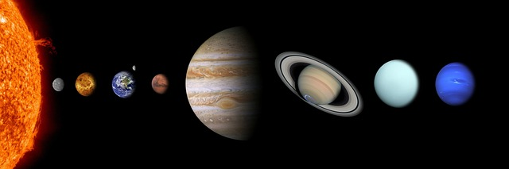
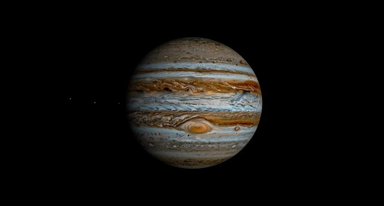
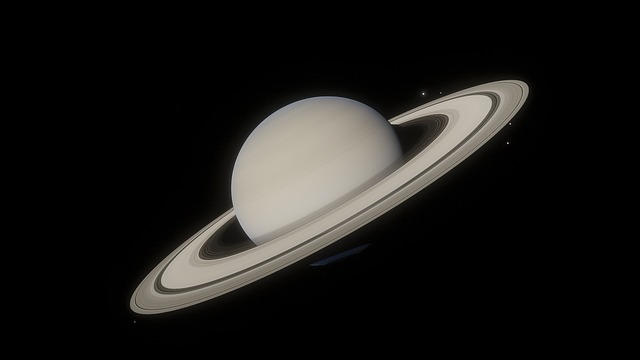
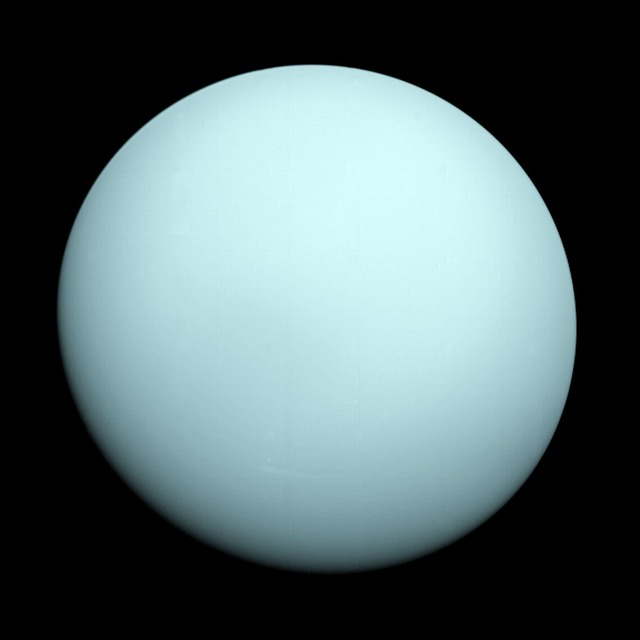

El Universo es el vasto espacio que abarca todo lo que existe: materia, energía, espacio y tiempo. Se formó hace
aproximadamente 13.8 mil millones de años en un evento conocido como el Big Bang, ¿o no?. Desde aquel suceso que
marca el inicio de lo conocido y desconocido,el universo se ha expandido continuamente.
Antes de todo, te debes cuestionar:
¿Por qué quieres conocer más sobre el Universo?
Aprender más sobre su historia
Entender la formación de galaxias y planetas
Descubrir la posibilidad de vida en otros planetas
Inspiración personal
Trabajo o estudio escolar
Una vez que te encuentres decidido, es momennto de aprender :)
Sistema solar

El sistema solar es un conjunto de cuerpos celestes que orbitan alrededor del Sol, nuestra estrella central,
debido a su fuerza gravitatoria. Está compuesto por ocho planetas principales (Mercurio, Venus, Tierra, Marte,
Júpiter, Saturno, Urano y Neptuno), sus lunas, planetas enanos como Plutón, asteroides, cometas, y otros objetos
menores.
Características principales:
Distancia y tamaño: Se extiende desde el Sol hasta la nube de Oort, a unos 2 años luz de
distancia
Planetas internos y externos: Los cuatro primeros planetas son rocosos, mientras que los
últimos son gigntes o helados.
Cinturones de asteroides: Como el cinturón principal entre Marte y Júpiter y el cinturón de
Kuiper más allá de Neptuno.
Planetas del Sistema Solar
Mercurio
Tamaño: El más pequeño.
Distancia al sol: 1° planeta.
Características: Superficie rocosa con cráteres; días extremadamente calurosos y
noches muy frías.
Dato curioso: No tiene atomósfera significativa.
Venus
Tamaño: Similar a la tierra.
Distancia al sol: 2° planeta.
Características: Atmósfera densa de dióxido de carbono; temperaturas más altas del
sistema solar por efecto invernadero.
Dato curioso: Gira en dirección oopuesta a la mayoría de los planetas.
Tierra
Tamaño: 3° más grande de los rocosos.
Distancia al sol: 3° planeta.
Características: Único con agua líquida en abundancia y vida conocida.
Dato curioso: El 71% de su superficie está cubierta de agua.
Marte
Tamaño: Más pequeño que la Tierra.
Distancia al sol: 4° planeta.
Características: Conocido como el "Planeta rojo" por su óxido de hierro; tiene los
volcanes más grandes del Sistema Solar.
Dato curioso: Podría haber albergado agua en el pasado.
Júpiter
Tamaño: El más grande del sistema solar
Distancia al sol: 5° planeta.
Características: Gigante gaseoso con una gran mancha roja (tormenta); tiene más de
79 lunas conocidas.
Dato curioso: Su luna Europa podría tener un océano bajo su superficie.

Saturno
Tamaño: 2° más grande.
Distancia al sol: 6° planeta.
Características: Famoso por sus anillos compuestos de hielo y polvo.
Dato curioso: Su densidad es tan baja que flotaría en agua.

Urano
Tamaño: 3° más grande.
Distancia al sol: 7° planeta.
Características: Gigante gaseoso con un color azul verdoso por el metano en su
atmósfera; rota de lado.
Dato curioso: Tiene los vientos más rápidos del sistema solar.

Neptuno
Tamaño: Similar a Urano.
Distancia al sol: 8° planeta.
Características: Gigante gaseoso con una atmósfera azul intensa; posee una gran
mancha oscura (tormenta).
Dato curioso: Es el planeta más alejado del Sol.
Características específicas de los planetas del Sistema Solar